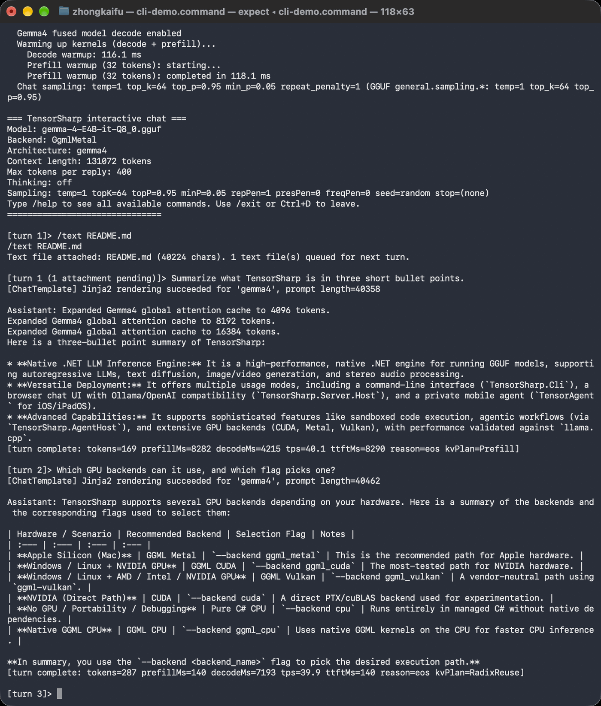
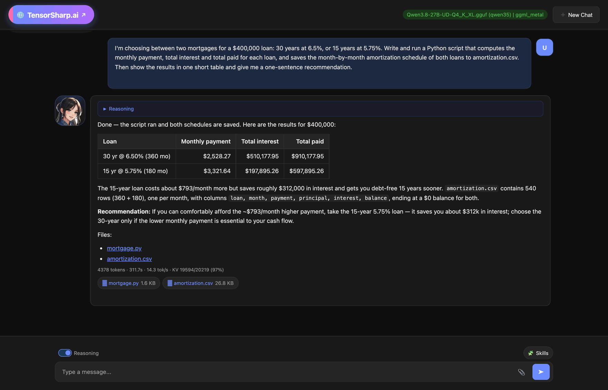
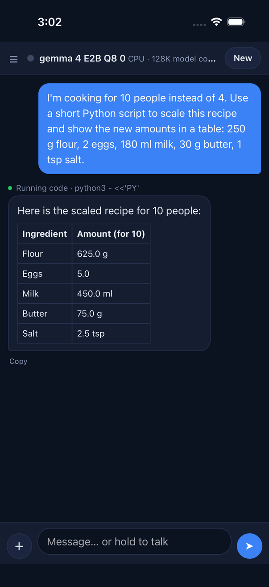
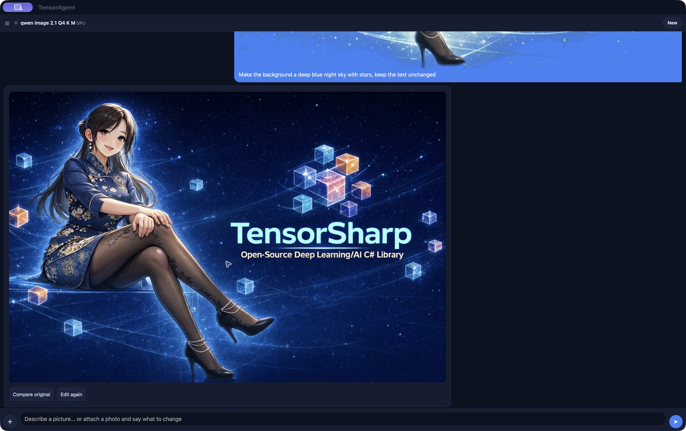
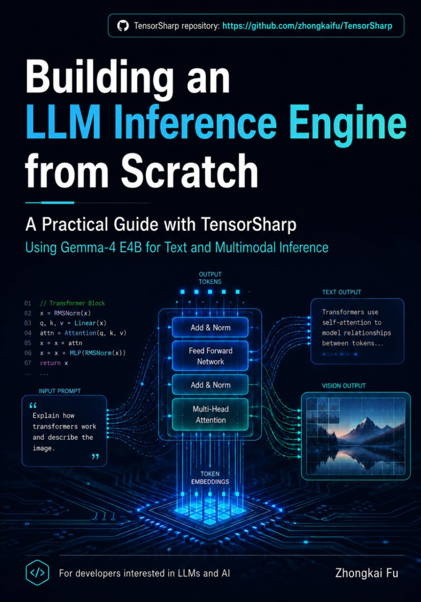

Terminal
Run a model locally
Use the CLI for chat, multimodal input, batches and benchmarks. The first-run guide covers SDK setup, model downloads and backends.
CLI quick start →Local AI. Native .NET.
Run text and multimodal models, generate images and video, and build agent workflows with one C# inference engine. Use the CLI, browser chat, Ollama- and OpenAI-compatible APIs, or your own .NET application.
How the engine worksView source on GitHub ↗
Your models. Your hardware. Local inference with no metered API required.
From a first local chat to an application that serves models and uses tools.
Chat, reason, and work with images, audio and documents using families such as Gemma, Qwen, DeepSeek and GLM. Input support depends on the model.
Explore text models →Generate and edit images with Qwen-Image 2.1, including masked edits and LoRA plug-ins. Make video with MiniMax-H3 or Wan; MiniMax-H3 also generates stereo audio.
Explore media models →Run GGUF BERT/XLM-R sentence encoders, including Arctic Embed and MiniLM, through batch OpenAI- and Ollama-compatible embedding APIs.
Use embeddings →Add Agent Skills, file and code tools, and bounded sub-agent delegation with AgentHost. Configure tool permissions for the work you want to allow.
Build agent workflows →Choose pure C# CPU or native CPU, CUDA, Vulkan, Metal and MLX backends. Model, quantization and hardware support are documented for each path.
Choose a backend →Embed inference in C#, run the CLI, or host browser chat and Ollama- and OpenAI-compatible APIs. TensorAgent brings the engine to a local app.
Integrate with C# →Start with the interface that fits your task. All three use TensorSharp.
Terminal
Use the CLI for chat, multimodal input, batches and benchmarks. The first-run guide covers SDK setup, model downloads and backends.
CLI quick start →Browser & APIs
Run the server and Web UI, then connect clients through chat, Responses and embedding endpoints.
Server and Web UI guide →Desktop app
Install on Apple Silicon Mac or Windows x64, download a model in the app, and start chatting or working with tools.
Download and install →New to source builds? Start with the Gemma 4 E4B walkthrough. See compute backends for Apple Silicon, NVIDIA, Vulkan and CPU setup. Model weights download separately.
Packages reflect their release tag; current source can include newer features. Check the desktop guide for available assets and platform requirements. iPhone and iPad use source builds.
One engine, four ways to use it, each an unedited capture of a real run. Select one to see it full size.

Run models, chats and benchmarks from a terminal.
Command Line →
A browser chat plus Ollama- and OpenAI-compatible APIs.
Server & Web UI →
Local chat and code tools, shown in the iPhone simulator.
TensorAgent for iOS →
Qwen-Image 2.1 edits an attached image from an instruction. Text chat, files, code, browser skills and video share the same app.
TensorAgent on the Mac and Windows →Backend availability, input modalities, tool calling, and validation vary by family. Compare model capabilities →
Continuous batching and paged KV caching with Radix prefix sharing are enabled by default. Optional speculative decoding offers another path to lower latency on supported models.
Explore serving features →Selected architectures support multi-GPU layer placement, tensor parallelism and multi-node execution. SSD-backed expert offload can make selected large MoE models fit beyond RAM.
Check scaling support →For developers, researchers and anyone learning how local inference works: follow the architecture, APIs, model cards and measured results.
Two books by Zhongkai Fu turn the TensorSharp source into guided implementation journeys.

Qwen · Inference & agents
Qwen Dense and MoE Models with TensorSharp and TensorAgent
Follow a C# implementation from tensors and tokenization to Qwen dense and MoE inference, then to agent tools, skills, code execution, and sandbox boundaries. TensorSharp and TensorAgent connect the design to GPU optimization, multimodal input, and desktop and mobile deployment.

Gemma 4 · Multimodal inference
Building a Multimodal LLM Inference Engine from Scratch with TensorSharp and Gemma 4 E4B
Build a multimodal inference engine in C# and .NET using Gemma 4 E4B. Work through tensor storage, GGUF loading, quantization, and tokenization, then explore image, video, and audio inputs, numerical checks, caching, and batching.
TensorSharp and TensorAgent are free. If they help you, a coffee supports continued development.